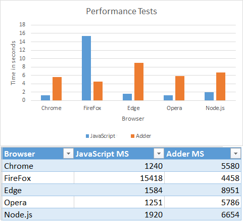

AdderScript
Executing untrusted code with ease.
What is it
Adder is a lightweight python-like language, implemented on top of JavaScript and designed to be safe to execute untrusted code.
Why?
The main purpose of Adder is to let you execute untrusted code on other users's browsers and even on your Node.js server, without worrying about security complications.
Adder will not let the untrusted code access anything you don't want it to access, will not allow it to get stuck or hog resources, and will make sure it can't do any harm or go outside its boundaries.
The main reason Adder is secured is that no JavaScript code is ever executed using plain eval(). Instead, everything is parsed and interpreted by the Adder interpreter, which is built and designed to be limited and safe.
Advantages
Here are the key features of Adder:
- Beautiful Pythonic syntax - if you know Python, you know Adder.
- Secured by design (Adder is designed to run untrusted code).
- Works on both Node.js and Browsers.
- No need for any sub-processes.
- Simple & accessible interface.
- Easy to extend, and easy to remove builtins and limit.
- Agnostic to JavaScript changes and versions.
- Easy to limit memory usage, commands per run, execution time, etc..
- Caching and Optimizations makes it pretty fast for multiple executions.
Platforms
Adder works and heavily tested on the following browsers / platforms:
- Chrome 53
- IE Edge
- FireFox 45
- Opera 40
- Node.js 4.1.1

Tests & Examples
Tests
To run Adder tests, you can open the html file tests/test.html in the browser of your choice.
To test in Node.js, run the following command (requires Node.js and qunit-cli installed):
qunit-cli tests/test.js
Performance Tests
To run performance tests, open the html file tests/performance.html in the browser of your choice. To test performance in Node.js, execute file tests/performance-node.js in Node.
Note that results may vary from run to run, so its recommended to execute several times and do an average.
Interactive Shell
To get an interactive shell and play with the language, you can open examples/shell.html in the browser of your choice.
Sandbox
To get a rich Adder sandbox with code examples and minimal editor, you can open examples/sandbox.html in the browser of your choice.
Performance
In overall, Adder appears to be 3-5 times slower than executing plain JavaScript, on multiple executions. On FireFox it appears to be much faster, due to caching of expressions.
The following is a summary of performance tests I conducted on windows 8:

These tests execute the same logic with Adder and JavaScript couple thousands of times, and measure the time it took to execute each code. For more info check out tests/performance.html.
Executing Adder - Host application side
This part of the docs explain how to setup and execute Adder from the host application side, eg the client JavaScript or your Node.js server.
Later in these docs we'll learn the language itself and how to write Adder scripts.
Quick Example
Before diving into the APIs, lets start with a simple example:
```JavaScript // init Adder environment (connect output to alerts) AdderScript.init({ outputFunc: function(text) {alert("output from script: " + text);}, });
// create a simple script and compile it compiledCode = AdderScript.compile('print("Hello World!")');
// spawn a program and execute it // the result will be an alert with the text "Hello World!". var program = AdderScript.newProgram(compiledCode); program.execute(); ```
Pretty simple right? Now lets dive in a little deeper.
Init Environment
To run Adder scripts you first need to init environment:
JavaScript
// if you don't provide any params output will go to console.log and default flags will apply
AdderScript.init();
Compile Code
Once the environment is ready, you can compile Adder codes using the compile function:
JavaScript
var compiled = AdderScript.compile(someCodeString);
Save / Load pre-compiled code
If you want to save the compiled code for later usage, you can simply JSON.stringify() it into a file:
```JavaScript // require fs var fs = require('fs');
// save compiled code: fs.writeFile(filename, JSON.stringify(compiledCode), function(err) { // handle errors... });
// load compiled code you previously saved fs.readFile(filename, 'utf8', function(err, data) { if (err) // handle errors... compiledCode = JSON.parse(data); }); ```
Create & Execute Programs
An Adder Program can be think of as a process executing a single Adder script one or more times.
However, the Adder program is not a real process but an object living on the same memory space as the host application.
To spawn a new program from a compiled code, use newProgram():
JavaScript
var program = AdderScript.newProgram(compiledCode);
The program will now live in memory and you can execute it as many times as needed and access its internal memory and variables.
Executing the same program multiple times is much faster than spawning a new program every time, due to caching and internal optimizations. In addition, global scope variables will stay alive between different executions of the same program.
To execute the program code once, use execute:
JavaScript
program.execute();
If you want to clear your program's context (eg remove all user defined variables from global scope), use resetContext():
JavaScript
program.resetContext();
Get values and execution errors
You can easily access the last evaluated result and get it as a native JavaScript object, using getLastValue():
JavaScript
var lastVal = program.getLastValue();
In addition, you can read any variable in the program's global scope using getGlobalVar():
JavaScript
// get variable from global scope as native javascript object
var value = program.getGlobalVar("var_name");
Or, you can set any variable in the program's global scope using setGlobalVar():
JavaScript
// set variable in program global scope
program.setGlobalVar("var_name", value, isReadonly);
In addition, you can check if any error occurred during the last execution, using getLastError():
JavaScript
var lastError = program.getLastError();
if (lastError) {
console.log(lastError.message);
}
You can see all Adder error types in object AdderScript.Errors, or in file errors.js.
Advanced init settings
When init Adder environment you can provide a dictionary with the following settings:
JavaScript
AdderScript.init({
flags: {}, // different compiler / interpreter flags you can set (explained later).
modules: ["ALL"], // which modules to load. ['ALL'] will load all built-in modules.
outputFunc: printOutput, // function to handle scripts output, when print() is called.
showDebugConsole: true, // if true, Adder will dump some extra debug data to console.
});
flags
The following are all the flags you can set when you init Adder environment (as the 'flags' option):
JavaScript
var flags = {
stackLimit: 256, // Stack depth limit. If exceeded will throw 'StackOverflow' exception.
maxStatementsPerRun: 2048, // Maximum statements that can be executed in a single run. If exceeded will throw 'ExceededStatementsLimit' exception.
maxStringLen: 5000, // Maximum allowed string lengths. If exceeded will throw 'ExceedMemoryLimit' exception.
maxContainersLen: 1000, // Maximum values allowed in lists, sets and dictionaries. If exceeded will throw 'ExceedMemoryLimit' exception.
maxVarsInScope: 100, // Limit number of variables allowed per scope. If exceeded will throw 'ExceedMemoryLimit' exception.
executionTimeLimit: 1000, // Time limit for a single execution (in milliseconds). If exceeded will throw 'ExceededTimeLimit' exception.
memoryAllocationLimit: 10000, // Memory limit, very roughly estimated, in bytes (per execution). If exceeded will throw 'ExceedMemoryLimit' exception.
removeBuiltins: [], // An optional list of builtin function and const names you want to remove from the language.
throwErrors: false, // If true, will throw exceptions from Adder execution if occur. If false, you need to check errors with getLastError().
}
modules
Modules are objects with functions and consts you can access from Adder scripts. For example, there's the built-in Math module that provide all the Math-related functionality and consts.
You can choose which modules are included in your environment to have fine control over which APIs Adder scripts can access.
Note that you cannot import modules from inside Adder script, Adder code can only access what the host application allows it (this is by design).
To include all modules you can set modules to ["ALL"].
However, that's not recommended in production, as it will include modules that can pop alerts and write to console (something you normally wouldn't want).
To load only the "safe for production" modules, use ["SAFE"].
All available modules will be described later in the chapter about writing Adder scripts.
outputFunc
An optional function to handle script output when print is called. For example, if you want to send all print output directly to console:
JavaScript
function outputFunc() {
console.log(Array.from(arguments).join(" "));
}
Note that this is the default behavior; If no outputFunc is provided, all output will go to console.log by default.
showDebugConsole
If set to true, Adder will show some useful debug data in console.
Register Functions
The most simple way to extend Adder's API and create an interface to the host application, is via builtin functions.
Builtin functions are basically functions Adder scripts can call from anywhere (defined in global scope) and will execute hard-coded JavaScript code.
To register a new builtin function use addBuiltinFunction():
```JavaScript // init AdderScript environment AdderScript.init();
// add builtin function AdderScript.addBuiltinFunction({name: "test", // function name func: function(x) {alert(x)}, // the function itself requiredParams: 1, // number of required params optionalParams: 0}); // number of additional optional params ```
The code above will add a builtin function called 'test', that gets one parameter and alert it.
Once registered, you can use the new function like any other built-in Adder function (the following is an Adder script code):
```Python
will alert "Hello World!"
test("Hello World!") ```
Register A Custom Module
Just like registering a builtin function, you can register a custom module to Adder's API.
As mentioned before, a module is an object containing functions and constants wrapped together under one object.
To define a custom built-in module:
```JavaScript // init AdderScript environment AdderScript.init();
// add builtin module AdderScript.addBuiltinModule("Test", { // define a function named 'foo' "foo": { func: function(x) {alert(x)}, requiredParams: 1, optionalParams: 0 },
// define a const named 'bar' that equals to "World"
"bar": "World",
}
);
```
The code above will define a module named Test with a function foo() and a constant string bar.
Once defined, you can use the new module just like any other built-in module (the following is an Adder script code):
```Python
will alert "Hello World!" (Test.bar equals to "World")
Test.foo("Hello " + Test.bar + "!") ```
Define a built-in object type
A module acts like a singleton. But what if you need an object you can instantiate, like Adder's list, dict or set?
To define a new built-in object type use defineBuiltinObject():
```JavaScript // init AdderScript environment AdderScript.init();
// define a new object type "Person" and return a function to instantiate it createPerson = AdderScript.defineBuiltinObject("Person", { "say_hello": { func: function() {alert("Hello World!")}, requiredParams: 0, optionalParams: 0 }, "race": "human", });
// now you can use 'createPerson' to create a new 'Person' instances. // however, you still need to provide an API for Adder to create it. // lets register a new built-in function, "createperson", that will use 'createPerson' to create a new 'Person' instance: AdderScript.addBuiltinFunction({name: "createperson", // function name func: function(x) {return createFunc(this)}, // the function itself to create Person. requiredParams: 0, // number of required params optionalParams: 0}); // number of additional optional params ```
Note that 'createPerson' function expect to get 'this' as param, where 'this' is any built-in function or module.
Now you can create and use the new 'Person' objects from Adder scripts (the following is an Adder script code):
```Python
will create a new person and call its function 'say_hello()'
a = createperson() a.sayhello() ```
Writing Adder Scripts
Previously we learned how to execute adder scripts and interact with them from the host application side. In this part of the tutorial we'll learn how to actually write Adder scripts.
Basic Syntax
Adder syntax is the same as Python, so if you know Python you know Adder and can skip this part.
If you are not familiar with Python, here's a quick summary (after this you will also be able to use Python!).
Indentation
Adder is indent-sensitive; indentation is used to open and close blocks (instead of curly brackets in other languages).
Lets take a look at an example with if and else blocks:
Python
if a == 5:
print("this is the if block")
else:
print("this is the else block")
Indents must be multiply of 4 spaces. Wrong indentation will throw syntax errors.
Comments
Comments in Adder begin with the hash character ("#") and are terminated by the end of line:
```Python
this is a comment line
a = 5 # this part is also a comment; after 'a = 5' is executed this part will be ignored. ```
Variables
To create a new variable you just need to assign a value to it:
Python
a = 5
Variables in Adder are loosely typed, meaning you can change the type on the fly:
Python
a = 5 # 'a' is a number.
a = "foo" # now 'a' is a string.
a = True # and now 'a' is a boolean.
Variables & Scopes
If 'a' is defined in a parent's block, setting its value will override it. For example:
```Python
define variable 'a' in parent block
a = 5
override the variable 'a' from inside the 'if' block
if True: a = 6
print 'a', which should now be '6'
print(a) ```
In addition, if you assign a variable inside a function that also exist in global scope, you will override it:
```Python
define global variable 'a'
a = 5
define a function that override global variable 'a' with another value
def test(): a = 6
call the function that will change the value of 'a'
test()
print 'a' that should now be '6'
print(a) ```
If you are familiar with Python you will notice this behavior is slightly different;
In Python, you need to use the global statement to override global variables from inside a function. In Adder, all variable assignment is global by default.
String variables
String variables have an extended API that normal variables don't share. This API contains useful query and string manipulation functions:
len ()
Return string length.
For example:
Python
"hello world".len() # <-- return 11.
split ([delimiter])
Break the string into a list of string, separated by a given delimiter (or space if not provided).
For example:
Python
"hello world".split() # <-- return list("hello", "world").
"hello-world".split("-") # <-- return list("hello", "world").
"hello-world".split("+") # <-- return list("hello-world"), since delimiter not found.
replace (search, replace)
Replace all occurrences of a search term with a given string.
For example:
Python
"hello world".replace("world", "friends") # <-- return "hello friends".
remove (search, replace)
Remove all occurrences of a search term.
For example:
Python
"hello world".remove("world") # <-- return "hello ".
index (search)
Return the index of a search term in string, or -1 if not found.
For example:
Python
"hello world".index("world") # <-- return 6.
"hello world".index("dog") # <-- return -1.
has (search)
Return string containing a search term (equivalent to x in string).
For example:
Python
"hello world".has("world") # <-- return True.
count (search)
Count how many times a search term appears in the string.
For example:
Python
"hello world, its a beautiful world!".count("world") # <-- return 2.
trim ()
Remove all white spaces from the begining and the end of the string.
For example:
Python
" hello world! ".trim() # <-- return "hello world!".
hash ()
Return a numeric hash value of the string.
For example:
Python
"hello world".hash() # <-- return 1794106052.
starts_with (word)
Return true if string starts with a given search term.
For example:
Python
"hello world".starts_with("hello") # <-- return True.
"hello world".starts_with("world") # <-- return False.
ends_with (word)
Return true if string ends with a given search term.
For example:
Python
"hello world".ends_with("world") # <-- return True.
"hello world".ends_with("hello") # <-- return False.
is_alpha ()
Return true if string contains only alphabetic characters in English.
For example:
Python
"helloworld".is_alpha() # <-- return True.
"hello world".is_alpha() # <-- return False (because of the space).
"helloworld2".is_alpha() # <-- return False (because of the '2').
is_digit ()
Return true if string contains only numeric digits.
For example:
Python
"123".is_digit() # <-- return True.
"123 45".is_digit() # <-- return False (because of the space).
"12a34".is_digit() # <-- return False (because of the 'a').
lower ()
Convert string to lower case.
For example:
Python
"HeLlo WoRlD!".lower() # <-- return "hello world!".
upper ()
Convert string to upper case.
For example:
Python
"HeLlo WoRlD!".upper() # <-- return "HELLO WORLD!".
title ()
Convert string to title case.
For example:
Python
"HeLlo WoRlD!".upper() # <-- return "Hello World!".
slice (start, [len])
Return a slice of the string.
For example:
Python
"Hello world!".slice(3) # <-- return "lo world!" (when no length provided, slice until end).
"Hello world!".slice(3, 5) # <-- return "lo wo" (because length is limited to 5).
Builtin Consts
A small number of Adder constants live in the global scope. They are:
False
The false value of the bool type. Assignments to False are illegal and will raise a SyntaxError.
True
The true value of the bool type. Assignments to True are illegal and will raise a SyntaxError.
None
None is frequently used to represent the absence of a value, as when default arguments are not passed to a function. Assignments to None are illegal and will raise a SyntaxError.
NaN
NaN (Not a Number) is a special constant that represent an illegal expressions involving numbers and non-number values.
For example, 5 * "a" will return NaN (note however that 5 * "2" will be evaluated as '5 * 2' and return 10).
VERSION
String, the current Adder Script version.
Operators
This chapter describe all the language arithmetic and comparison operators.
Basic Arithmetic Operators
In adder all the basic arithmetic operators are supported - add, subtract, multiply, divide and modulate:
Python
a = 5 + 2
b = 4 - 2
c = 6 / 3
d = 2 * 15
e = 5 % 2
In addition, there's a built-in operator for power, represented by **:
Python
a = 2 ** 3 # equals to '2 * 2 * 2'
In-place operators
In-place operators are syntactic sugar to change the value of a variable:
Python
a += 1 # the same as "a = a + 1"
b -= 1 # the same as "b = b - 1"
c /= 2 # the same as "c = c / 2"
d *= 2 # the same as "d = d * 2"
Most arithmetic operators have their own in-place version.
Comparison operators
Adder support all the basic comparison operators: >, <, >=, <=, !=, ==.
They work the same as in most programming language:
Python
2 < 5 # true
5 > 20 # false
2 == 2 # true
3 >= 2 # true
5 <= 4 # false
5 != 2 # true
True != False # true
list(1) == list(1) # true
list(1) == list(2) # false
Bitwise operators
To perform bitwise and operation, use the & operator:
Python
print(36 & 14) # will print '4'
To perform bitwise or operation, use the | operator:
Python
print(36 | 14) # will print '46'
not
The not operator invert a boolean value, eg turn true into false and vice-versa:
Python
if not True:
print("hello!")
or
To create a conditional 'or', use the or operator:
Python
a = 5
if a == 1 or a == 5:
print("a is either 1 or 5")
Note that or doesn't necessarily return a boolean (true / false), it returns the first value that when cast to boolean will return true.
This means you can also use or to assign the first value option.
For example:
```Python
this will print "yay!", the first value considered as 'true' when casted as boolean
a = False or None or "yay!" or True print(a) ```
and
To create a conditional 'and', use the and operator:
Python
a = 1
b = 2
if a == 1 and b == 2:
print("a is 1 and b is 2")
With and operator the condition is met only if all parts are true.
in
In General, in is used to check if a value is contained in an object.
For example, with lists in will return true if the list contain the given value:
Python
lst = list(1,2,3)
if 1 in lst:
print("'1' is in the list!")
With dictionaries, in will return true if value is a key inside the dictionary.
Python
dct = dict()
dct.set("a", "hello")
if "a" in dct:
print("'a' is a key inside the dictionary!")
not in
not in is a syntactic sugar to test if a value is not in another value:
Python
lst = list(1,2,3)
if 5 not in lst:
print("5 is not in the list!")
is
is operator is used to check if two values are the same object, or strictly equal. For example:
Python
5 is 5 # true
True is True # true
list() is list() # false - not the same object
4 is 5 # false
0 is False # false
a = list(); a is a # true
is not
As a syntactic sugar, to test if value is not the same object as other value. For example:
Python
a = list()
b = list()
if a is not b:
print("'a' is not 'b'!")
Conditions (if, else, elif)
Conditions test an expression and determine weather or not to execute the following block.
if
To write a conditional block, you use the if statement:
Python
if a == 5:
print("'a' equals 5")
In the example above the block following the statement will only be executed if the condition (a == 5) is met.
inline if statements are also valid:
Python
if a == 5: print("'a' equals 5")
else
else statements will execute their following block only if the last if condition was false.
For example:
Python
if a == 5:
print("'a' equals 5")
else:
print("'a' does not equal 5")
elif
It is possible to add a conditional if to any else statement, eg make a block that will execute only if the previous if was false and a new condition is met.
To create an else condition (can be think of as else if), use the elif statement:
Python
if a == 5:
print("'a' equals '5'")
elif a == 6:
print("'a' equals '6'")
else:
print("a is neither '5' nor '6'")
Loops
There are two ways to make loops / iterate in Adder. We'll explain them in this chapter.
for
for statement iterate over the values of a container. For example, to iterate over the values of a list:
Python
a = list(1,2,3)
for i in a:
print(i)
while
while statement will repeat the block as long as the condition is true:
Python
a = 5
while a > 0:
print(a)
a -= 1
Functions
To define a new function, use the def statement:
```Python
define the function
def hello_world(): print("Hello World!")
use it
hello_world() ```
Or with params:
```Python
define the function
def hello_someone(name): print("Hello " + name)
use it
hello_someone("Bob") ```
Containers (list, set, dict)
There are 3 built-in containers you should know in Adder:
List
List hold a list of values, while preserving the order of insertion.
To create a new list:
```Python
create an empty list
a = list()
create a list with starting values: 1,2,3
a = list(1,2,3) ```
The list API is slightly different than Python's list. A list instance have the following functions:
clone ()
Create a shallow copy of the list.
Example:
Python
a = list(1,2,3)
b = a.clone() # <-- 'b' will now be equal to 'a', but not the same object.
empty ()
Return true if the list is empty, false otherwise.
Example:
Python
a = list()
if a.empty():
print("List is empty!")
to_set ()
Convert the list to a Set object (described later).
Example:
Python
a = list(1, 2, 3)
b = list.to_set() # <-- 'b' is now a set with values 1, 2 and 3.
len ()
Return list length.
Example:
Python
a = list(1,2)
print(a.len()) # <-- will print '2'.
append (val)
Add a value to the end of the list.
Example:
Python
a = list("foo", "bar")
a.append("foobar") # <-- list will now contain: "foo", "bar", "foobar".
has (val)
Return if the list contains a given value.
Example:
Python
a = list("foo", "bar")
if a.has("foo"):
print("List have value 'foo'")
clear ()
Clear the list (remove all values from it).
Example:
Python
a = list("foo", "bar")
a.clear() # <-- 'a' will now be an empty list.
count (val)
Return how many times a given value appears in the list.
Example:
Python
a = list("foo", "bar", "foo", "hello")
print(a.count("foo")) # <-- will print 2 ("foo" appears twice in list).
extend (other)
Extend this list with another list (like concat).
Example:
Python
a = list("foo", "bar")
b = list("hello", "world")
a.extend(b) # <-- 'a' will be a list with: "foo", "bar", "hello", "world". 'b' will remain unchanged.
index (val)
Return the first index of a given value in the list (or -1 if value not found).
Example:
Python
a = list("foo", "bar", "hello")
print(a.index("bar")) # <-- will print '1', the index of "foo".
print(a.index("other")) # <-- will print '-1', since "other" is not in list.
insert (val, position)
Add a value to the list at a given position (index).
Example:
Python
a = list("foo", "bar")
a.insert("hello", 1) # <-- 'a' will now contain: "foo", "hello", "bar".
pop ([position])
Remove and return the last value from list, or from a given position (if provided position argument).
Example:
```Python
using pop without position param
a = list("foo", "bar", "hello") a.pop() # <-- will remove and return "hello", which is the last value in the list.
using pop with position param
a = list("foo", "bar", "hello") a.pop(1) # <-- will remove and return "bar", which is the value with index 1 in the list. ```
shift ()
Remove and return the first value from the list.
Example:
Python
a = list("foo", "bar", "foobar")
a.shift() # <-- will remove and return "foo", the first value in the list.
remove (val)
Remove a given value from list (if found).
Example:
Python
a = list("foo", "bar", "hello")
a.remove("bar") # <-- will remove "bar" from the list.
reverse ()
Reverse the list.
Example:
Python
a = list("foo", "bar", "hello")
a.reverse() # <-- 'a' will now contain: "hello", "bar", "foo".
slice (start, [end])
Return a segment of the list from a starting position and an optional ending position (ending position value will not be included).
Example:
Python
fruits = list("Banana", "Orange", "Lemon", "Apple", "Mango")
print(fruits.slice(1, 3)) # <-- will print "Orange,Lemon".
join ([delimiter])
Convert the list to a string with an optional delimiter (if delimiter is not provided, a comma will be used).
Example:
Python
a = list("foo", "bar", "hello")
print(a.join("--")) # <-- will print "foo--bar--hello".
sort ()
Sort the list values by a default string sorting.
Example:
Python
a = list("b", "c", "a")
a.sort() # <-- 'a' will now contain: "a", "b", "c".
at (position)
Return value from a given position in list.
Example:
Python
a = list("foo", "bar", "hello")
print(a.at(1)) # <-- will print "bar"
Iterating lists
To iterate over the values in a List, use for-in loop:
Python
a = list("foo", "bar", "foobar")
for val in a:
print(val)
Set
A Set is like a list, but in a set each value may only appear once. In addition, a Set may only contain simple types and not objects. Sets are much faster when you need to check if values exist or not.
To create a new set:
```Python
create an empty set
a = set()
create a set with starting values: "Apple", "Banana", "Orange"
a = set("Apple", "Banana", "Orange") ```
The set API is slightly different than Python's set.
A set instance have the following functions:
clone ()
Create a shallow copy of the set.
Example:
Python
a = set(1,2,3)
b = a.clone() # <-- 'b' will now be equal to 'a', but not the same object.
empty ()
Return true if set is empty, false otherwise.
Example:
Python
a = set()
if a.empty():
print("Set 'a' is empty!")
to_list ()
Convert the set to a List object.
Example:
Python
a = set(1, 2, 3)
b = a.to_list() # <-- 'b' is now a new list with values 1, 2, 3.
len ()
Return set length.
Example:
Python
a = set(1,2)
print(a.len()) # <-- will print '2'.
add (val)
Add a value to the end of the set. If value already exist in set, will not do anything (as sets may only contain each value once).
Example:
Python
a = set("foo", "bar")
a.add("foobar") # <-- set will now contain: "foo", "bar", "foobar".
has (val)
Return if the set contains a given value.
Example:
```Python
create a set
a = set("foo", "bar")
check if contains a value
if a.has("foo"): print("'foo' is in set") ```
Note that has is equivilant of using the in operator:
Python
if "foo" in set("foo", "bar"):
print("'foo' is in set")
clear ()
Clear the set (remove all values from it).
Example:
Python
a = set("foo", "bar")
a.clear() # <-- set will now be an empty set.
extend (other)
Extend this set with another set (like concat).
Example:
Python
a = set("foo", "bar")
b = set("hello", "world")
a.extend(b) # <-- 'a' will be a set with: "foo", "bar", "hello", "world". 'b' will remain unchanged.
index (val)
Return the index of a given value in set (or -1 if value not found).
Example:
Python
a = set("foo", "bar", "hello")
print(a.index("bar")) # <-- will print '1', the index of "foo".
print(a.index("other")) # <-- will print '-1', since "other" is not in list.
remove (val)
Remove a given value from the set (if found).
Example:
Python
a = set("foo", "bar", "hello")
a.remove("bar") # <-- will remove "bar" from the set.
join ([delimiter])
Convert the set to a string connected with a given delimiter (if delimiter is not provided, a comma will be used).
Example:
Python
a = set("foo", "bar", "hello")
print(a.join("--")) # <-- will print "foo--bar--hello".
Iterating sets
To iterate over the values in a Set, use the for-in loop:
Python
a = set("foo", "bar", "foobar")
for val in a:
print(val)
Dictionary
A dictionary, often known as “associative arrays” or "hash table", is a table of string keys leading to values.
To create a new dictionary:
```Python
create an empty dictionary
a = dict()
set a value
a.set("key", "value")
get a value
a.get("key") ```
The dictionary API is slightly different than Python's dictionary.
A dictionary instance have the following functions:
clone ()
Creates a shallow copy of the dictionary.
Example:
Python
a = dict()
b = a.clone() # <-- 'b' will now be equal to 'a', but not the same object.
set (key, value)
Add a key-value to the dictionary.
Example:
Python
a = dict()
a.set("key", "value") # <-- dict will now contain a single key, "key", that will lead to the value "value".
get (key, [default])
Get a value from the dictionary by key.
If key is not found in dictionary, default will be returned. If no default argument is provided, None will be returned instead.
Example:
```Python
create the dictionary and add value
a = dict() a.set("key", "value")
get values that exists
print(a.get("key")) # <-- will print "value"
get non-existing value without default
print(a.get("some-key")) # <-- will print None (empty string in default sandbox implementation)
get non-existing value with default
print(a.get("some-key", "not-found")) # <-- will print "not-found" ```
keys ()
Return a list with all keys in the dictionary.
Example:
```Python a = dict() a.set("foo", 1) a.set("bar", 2)
print(a.keys()) # <-- will print "foo,bar" ```
values ()
Return a list with all values in the dictionary.
Example:
```Python a = dict() a.set("foo", 1) a.set("bar", 2)
print(a.values()) # <-- will print "1,2" ```
len ()
Return how many keys are in the dictionary.
Example:
```Python
create the dictionary
a = dict() a.set("foo", 1) a.set("bar", 2)
print its length
print(a.len()) # <-- will print 2. ```
remove (key)
Remove a key from the dictionary.
Example:
```Python a = dict() a.set("foo", 1)
a.remove("foo") # <-- will remove "foo" from the dictionary. a.remove("bla") # <-- won't do anything, since "bla" doesn't exist. ```
clear ()
Clear the dictionary completely, leaving it empty.
Example:
Python
a = dict()
a.set("foo", 1)
a.clear() # <-- 'a' will now be an empty dictionary.
empty ()
Return if the dictionary is empty, eg if it has no keys in it.
Example:
Python
a = dict()
if a.empty():
print("Dictionary is empty!")
has (key)
Return if the dictionary have a given key.
Example:
```Python
create dictionary
a = dict() a.set("foo", "bar")
check if key exists in it
if a.has("foo"): print("There's a key 'foo' in dictionary!") ```
Note that using has() is equivalent to using the in operator:
```Python
create dictionary
a = dict() a.set("foo", "bar")
check if key exists in it
if "foo" in a: print("There's a key 'foo' in dictionary!") ```
extend (other)
Extend this dictionary with another dictionary (like concat).
Example:
```Python a = dict() a.set("foo", "bar")
b = dict() b.set("hello", "world")
a.extend(b) # <-- 'a' will be a dictionary with: "foo" = "bar", "hello" = "world". 'b' will remain unchanged. ```
Iterating dictionaries
To iterate over the keys of a dictionary, use a for loop:
```Python
create dictionary with values
a = dict() a.set("foo", "bar") a.set("hello", "world")
iterate dictionary and print it
for key in a: print("Key: " + key + ", " + "Value: " + a.get(key)) ```
Built-ins
Adder have a set of built-in functions in global scope that provide some basic language functionality. The built-in functions you should know are:
print (...)
Print output (either a single or multiple string messages to print).
The default print implementation uses console.log, however the host application may override it using the 'outputFunc' init option.
Example:
Python
print("Hello World!")
all (...)
Return true only if all given values are true or can be evaluated as boolean true.
Example:
Python
print(all(1, True, Math)) # print True
print(all(1, True, Math, None)) # print False, because of the 'None' in the end
any (...)
Return true if any of the given values is true or can be evaluated as boolean true.
Example:
Python
print(any(0, True, None)) # print true, thanks to the second 'True' value
print(any(0, 1, None)) # print true, thanks to the second '1' value, which casts to true
print(any(0, False, None)) # print false, because none of the values are true
bin (num)
Return a binary representation of a number (as string).
Example:
Python
print(bin(15)) # will print "1111"
bool (val)
Cast any value to a boolean (either True or False).
Example:
Python
print(bool(False)) # False
print(bool(True)) # True
print(bool(NaN)) # False
print(bool(0)) # False
print(bool(False)) # False
print(bool(1)) # True
print(bool("Foo")) # True
print(bool(Math)) # True
callable (val)
Return true if given variable is a callable function.
Example:
```Python print(callable(bin)) # will print "True" print(callable(Math.abs)) # will print "True"
def test(): pass print(callable(test)) # will print "True"
print(callable(5)) # will print "False" print(callable(True)) # will print "False" print(callable(None)) # will print "False" ```
chr (num)
Convert a number to its ASCII character.
Example:
Python
print(chr(97)) # <-- will print 'a'
cmp (x, y)
Compare two numeric values. Returns the sign of the difference of two numbers: -1 if x < y, 0 if x == y, or 1 if x > y.
Example:
Python
cmp(1, 2) # <-- returns -1
cmp(1, 1) # <-- returns 0
cmp(2, 1) # <-- returns 1
float (val)
Convert an int or a string to a float.
Example:
Python
print(float("4.3") + 0.2) # <-- will print 4.5
int (val)
Convert a float or a string to an int.
Example:
Python
print(int("4") + 1) # <-- will print 5
len (val)
Return the length of an object (depends on object type).
This is equivalent to val.len().
Example:
Python
a = list(1,2,3)
print(len(a)) # <-- will print 3
ord (chr)
Return the ASCII value of a character.
Example:
Python
print(ord('a')) # <-- will print 97
range ([start], end, [step])
Return a list containing the values between a given starting point, ending point, and with an optional step size.
This method is extremely useful with for loops.
Example:
```Python
will print numbers 0 to 9 (including). total of 10 iterations.
for i in range(10): print(i)
will print numbers 5 to 7 (including). total of 3 iterations.
for i in range(5, 8): print(i)
will print numbers 0 to 9 (including), with steps of 2. total of 5 iterations.
for i in range(0, 10, 2): print(i)
will create a list with values 0-9 (including).
a = range(10) ```
str (obj)
Convert an object or value to a string.
Example:
Python
str(95) # <-- return "95".
str(list(1,2,3)) # <-- return "1,2,3".
str(None) # <-- return "" (empty string).
str(True) # <-- return "true".
str("foo") # <-- return "foo".
repr (obj)
Return the language representation of an object, as a string.
Example:
Python
repr(95) # <-- return "95".
repr(list(1,2,3)) # <-- return "list(1,2,3)".
repr(None) # <-- return "None".
repr(True) # <-- return "True".
repr("foo") # <-- return '"foo"' (with quotes)
type (obj)
Return the type of the object.
Example:
Python
type("string") # "string"
type(4) # "number"
type(False) # "boolean"
type(None) # "none"
type(ord) # "function"
type(Math) # "module"
type(list()) # "list"
type(set()) # "set"
type(dict()) # "dict"
type(5 * "str") # "NaN"
list (...)
Create a new list with optional starting values.
Example:
Python
a = list()
b = list(1,2,3)
set (...)
Create a new set with optional starting values.
Example:
Python
a = set()
b = set(1,2,3)
dict ()
Create a new empty dictionary.
Example:
Python
a = dict()
reversed (lst)
Reverse a list copy, without changing the original list.
This is equivalent to a.clone().reverse().
Example:
Python
a = list(1,2,3)
b = reversed(a)
print(a) # <-- will print "1,2,3"
print(b) # <-- will print "3,2,1"
equal (a, b)
Return True if both values are equal, False otherwise.
This is equivalent to a == b, but usable as a function, so you can do things like compare_func = equal and later use 'compare_func' or override it.
Example:
Python
a = list(1,2,3)
b = list(1,2,3)
if equal(a, b):
print("Lists are equal!")
dir ([obj])
Return all the keys in current scope or in object's API.
This function should not be used for production purposes, its mostly useful to examine objects in shell.
Example:
```Python
will print everything in global scope
print(dir())
will print the API functions and vars of the 'Math' module
print(dir(Math)) ```
delete (obj)
Remove a variable.
Example:
Python
a = 5
delete(a) # <-- 'a' will no longer exist after this.
exist (obj)
Return True if variable name exists in current scope or globals.
Example:
Python
if exist("a"):
print("'a' exists: " + a)
Modules
Modules are objects with built-in functions and constants that Adder scripts can access and use.
When setting up the environment (on your host application), you can choose which modules to import and can even register your own modules (this described in details in previous chapters).
You use modules with the dot notation:
Python
a = Math.abs(-5)
All modules act like a global singleton class.
In this chapter we'll go over the basic built-in modules and describe their APIs.
Math
Provide basic math-related functionality and constants.
The Math module provide the following API:
abs (val)
Convert a number to its absolute value.
Example:
Python
Math.abs(-5) # <-- will return 5.
min (...)
Get a list of numeric arguments (or a single list argument) and return the smallest value.
Example:
Python
Math.min(1, 5) # <-- will return 1.
Math.min(list(1, 5)) # <-- will return 1.
Math.min(list(1, 2), 5) # <-- will return NaN - can't mix numeric and list arguments.
max (...)
Get a list of numeric arguments (or a single list argument) and return the largest value.
Example:
Python
Math.max(1, 5) # <-- will return 5.
Math.max(list(1, 5)) # <-- will return 5.
Math.max(list(1, 2), 5) # <-- will return NaN - can't mix numeric and list arguments.
pow (x, y)
Do power between two numbers (equivalent to the ** operator).
Example:
Python
Math.pow(3, 2) # <-- will return 9, equivalent to '3 ** 2'
round (val)
Round a numeric value to its closest round number.
Example:
Python
Math.round(5.2) # <-- will return 5.
Math.round(5.6) # <-- will return 6.
floor (val)
Round down a numeric value.
Example:
Python
Math.round(5.2) # <-- will return 5.
Math.round(5.6) # <-- will also return 5.
ceil (val)
Round up a numeric value.
Example:
Python
Math.round(5.2) # <-- will return 6.
Math.round(5.6) # <-- will also return 6.
cos (val)
Calculate cos on a numeric value.
Example:
Python
print("Cos of 1: ", Math.cos(1))
sin (val)
Calculate sin on a numeric value.
Example:
Python
print("Sin of 1: ", Math.sin(1))
atan (val)
Calculate atan on a numeric value.
Example:
Python
print("Atan of 1: ", Math.atan(1))
exp (val)
Calculate exp on a numeric value.
Example:
Python
print("Exp of 1: ", Math.exp(1))
tan (val)
Calculate tan on a numeric value.
Example:
Python
print("Tan of 1: ", Math.tan(1))
log (val)
Calculate log on a numeric value.
Example:
Python
print("Log of 1: ", Math.log(1))
sqrt (val)
Square root a numeric value.
Example:
Python
print("Square root of 4: ", Math.sqrt(4))
sign (val)
Return 1 for positive values, -1 for negatives, 0 for 0.
Example:
Python
Math.sign(4) # <-- will return 1
Math.sign(-3) # <-- will return -1
Math.sign(0) # <-- will return 0
sum (...)
Get a list of numeric arguments (or a single list argument) and return the sum of the values.
Example:
Python
Math.sum(1,2,3) # <-- will return 1+2+3 = 6
Math.sum(list(1,2,3)) # <-- will return 1+2+3 = 6
mul (...)
Get a list of numeric arguments (or a single list argument) and return the multiplication of the values.
Example:
Python
Math.mul(2,2,3) # <-- will return 2*2*3 = 12
Math.mul(list(2,2,3)) # <-- will return 2*2*3 = 12
E
E constant.
PI
PI constant.
SQRT2
SQRT2 constant.
Random
Provide random-generation functionality.
The Random module provide the following API:
rand ()
Return a random float number between 0 and 1.
Example:
Python
print(Random.rand())
rand_int ([min,] max)
Return a random int number between min and max.
Example:
Python
print(Random.rand_int(2, 10)) # print a random number between 2 to 10 (inclusive)
print(Random.rand_int(5)) # print a random number between 0 to 5 (inclusive)
rand_float ([min,] max)
Return a random float number between min and max.
Example:
Python
print(Random.rand_float(2, 10)) # print a random number between 2.0 to 10.0 (inclusive)
print(Random.rand_float(5)) # print a random number between 0.0 to 5.0 (inclusive)
select (iterable)
Return a random value from a list or a set (doesn't work with dictionaries).
Example:
Python
print(Random.select(list(1,2,3,4,5))) # get a random value from list options
print(Random.select(set(1,2,3,4,5))) # get a random value from set options
boolean ()
Return either True or False.
Example:
Python
print("And the answer is: " + Random.boolean())
binary ()
Return either 0 or 1.
Example:
Python
print("0 or 1: " + Random.binary())
Alert
Provide functionality to show alerts to user (in browser). Use it for debug purposes, not recommended for production.
The Alert module provide the following API:
alert (msg)
Show a standard browser alert box with msg string.
Input
Provide functionality to get input from user (in browser). Use it for debug purposes, not recommended for production.
The Input module provide the following API:
rawInput (msg, [default])
Show a standard browser prompt box with msg string, and a default value (if provided).
What Next
If you want to start using Adder Scripts it is recommended you get familiar with the language. Check out the Adder Sandbox (TBD LINK) and the examples there, or take a look at the following cool game made with Adder (TBD LINK).
If you find any bugs, problems or security breaches in Adder, please report in the git repository, or drop me an email at ronenness@gmail.com.